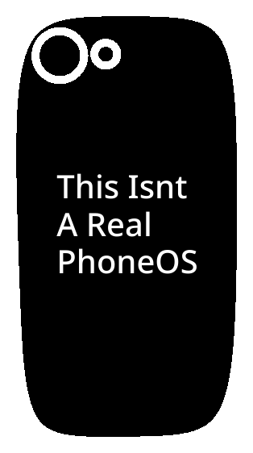
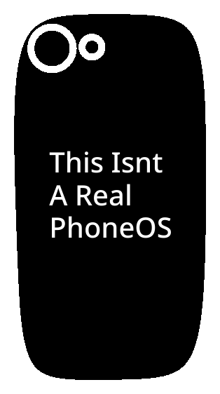

Armor Stand Anarchy is a texture pack which adds a huge missing piece to vanilla Minecraft: Fancy Decorations! This texture pack adds several different decorations to Minecraft, along with cool things such as statues of mobs, ghost block doors, and more! You can get all these unique decorations with only two materials: Armor stands and name tags! On top of all of these amazing things, we have the best part of this texture pack: It is fully vanilla! No addons! No Cheats! You can have all of these cool decorations and still earn achievements at the same time!
Here is a list of everything Armor Stand Anarchy has to offer:
Starting with the 3D models, we have:
•"Warden": The warden
•"Wither": The wither
•"Statue": A player styled statue
•"Technoblade": A statue of Technoblade (RIP)
•"Dragon": The literal ender dragon
•"Dirt" and "Stone": Ghost blocks of dirt and stone respectively.
•"Pot": A large flower pot, for 2 block tall flowers.
•"Scarecrow": A cute scarecrow to keep your crops safe
•"Subscribe": A youtube like button and subscribe button
•"Sphere": A glowing yellow sphere... how tf did this get here. this is minecraft.
•"Minecraft Laptop": A laptop running a simplified, 2D version of Minecraft.
•"BSOD Laptop": A laptop with a Blue Screen of Death error.
•Two easter eggs, you can find them yourself ;)
Next, we have the 2D paintings. They are:
•"Mojang when minecoins": Stonks
•"Vanilla Cake Variants": The cake icon from Vanilla Cake Variants
•"*trumpet sound*": Hehe funny skeleton meme.
•"Bliss": The classic Windows XP wallpaper, Bliss.
•"Beginnings": The start of any minecraft world, a player and a tree.
•"Chalkboard": A simple classroom chalkboard.
•"Water", "Earth", "Fire", and "Air": The unused elemental paintings.
•"sneakyninjaMX stare": sneakyninjaMX stares at you
•"Floaticons": An ad for a character I made
•"Peaceful MX" and "Peaceful Damian": Floaticon Damian and Minecraft MX in peaceful scenes
•"Sus Meme 1": This meme seems suspicious, you should get a closer look.

You can download this texture pack by clicking the image above. You can install it just like any Minecraft texure pack, by downloading it and opening it.